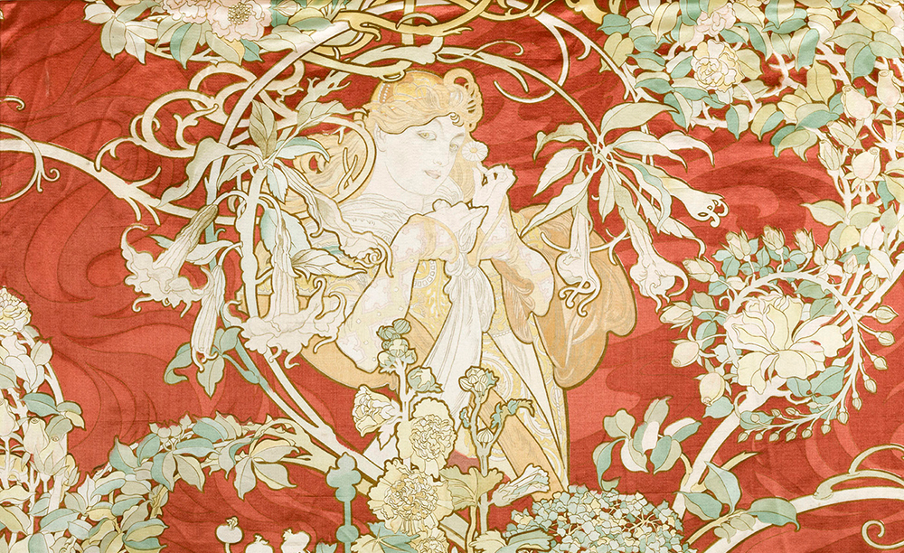

THE ART NOUVEAU MOVEMENT
1890-1910
Scroll to find out more...
Margaret and Frances Macdonald
Margaret and Frances Macdonald were two key pioneers of the Art Nouveau Movement who sought to transgress against the gender restrictions of the 18th century, emerging into a new century full of hope for liberation, both artistically and sexually.
.jpg)
.jpg)
In 1890, both sisters registered to enter the Glasgow School of Art, where they met Charles Rennie Mackintosh and Herbert MacNair, and would go on to create the infamous ‘Glasgow Four’ artistic collective, particularly distorting and challenging female representation. Eventually Margaret married Charles and Frances married Herbert.
The Vienna Succession was a movement catalyzed by a break with the academic style in Vienna in 1897, where the ‘Glasgow Four’s’ work was well received. Despite Margaret’s success in Vienna, her work was greatly criticized and overshadowed by Charles’ legacy.
Gustav Klimt
.png)
Gustav Klimt, pioneer of the Vienna Art Nouveau Movement and Vienna Succession, had works that mainly focused on the female form and themes of the dominant woman or ‘Femme Fatale’. Particularly his ‘Golden Era’ categorized by the use of gold leaf and decadent, rich colours, was of importance in the Art Nouveau Movement.

However, following the creation of three commissioned ceiling pieces for the University of Vienna, his reputation was completely tarnished. The three pieces titled Philosophy (1900), Medicine (1901) and Jurisprudence (1907) were all incredibly beautiful, but at the time were all deemed sexually explicit and inappropriate; a common theme seenmongst aritsts of the Art Nouveau period as it was a period of liberation experimentation for many in this world.
During World War Two all three paintings were destroyed by Nazi troops.
Alphonse Mucha
Alphonse Mucha, Czech born illustrator, had created by far the most recognisable style within the Art Nouveau Movement, despite hating his formal association with the Art Nouveau Movement. His posters had an egalitarian nature and popularized the aesthetic ‘Le Style Mucha’ including mostly decadent women with long flowing hair, optimistic stances and colours and botanical references.
However, Mucha’s big break came from the famous stage actress Sarah Bernhardt. She commissioned him to design a poster for the play she was to star in, ‘Gismonda’, a Greek melodrama. After completing this commission and now having associations with Bernhardt, Mucha propelled his career forward and had an influx of commission requests, being the source of popularisation for ‘La Style Mucha’ and making it as recognisable at it even in modern day audiences.
Overall, the Art nouveau Movement had undoubtedly influenced every medium in this current day such as the development of printmaking (particularly in lithography), making more unconventional styling choices in architecture and generally exploring more themes within artworks that society deems taboo, as these artists did above with gender and sexuality in their own respective times.
.jpg)